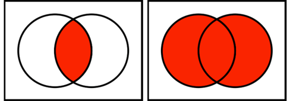

Probability was thought of by statisticians and mathematicians only as an objective phenomenon derived from objective processes.
Note
There are two categories of objective probability:
classical/a priori probability
frequentist/a posteriori probability
Classical Probability
Probabilities for random events related to games of chance can be calculated by the processes of abstract reasoning. Therefore, it is not necessary for these events to happen to compute these probabilities.
Classical/A Priori Probability
Probability is defined as follows: If an event can occur in \(N\) mutually exclusive and equally likely ways, and if \(m\) of these possess a trait \(E\), the probability of the occurrence of \(E\) is equal to \(m/N\).
\[
P(E)= m/N
\]
Note
As an example, the probability of getting a three after tossing a fair six-sided die can be calculated by assuming that each of the six sides is equally likely to be observed.
The number of outcomes that include a three is 1 out of a total of 6 mutually exclusive outcomes.
Hence, the probability is 1/6.
Frequentist Probability
The frequentist approach to probability depends on the repeatability of some process and the ability to count the number of repetitions, as well as the number of times that some event of interest occurs. The probability describes the long-run relative frequency of occurrences from the process.
Frequentist/A Posteriori Probability
Probability is defined as follows: If some process is repeated a large number of times, \(n\), and if some resulting event with the characteristic \(E\) occurs \(m\) times, the relative frequency of occurrence of \(E\), \(m/n\), will be approximately equal to the probability of \(E\).
\[
P(E) = m/n
\]
Important
Note that \(m/n\) is only an estimate of the probability, and that \(n\) should be large to have a better estimate of \(P(E)\).
This view holds that probability measures the confidence that a particular individual has in the truth of a particular proposition.
Note
The most famous example of subjective probability is Bayesian, which is a mathematically formal method to combine experimental data and expert information in producing probabilities.
Properties of Probability
Helpful Definitions
Sample Space
A sample space is a list of all possible outcomes that might be observed.
Event
An event is any collection of outcomes in the sample space.
Mutually Exclusive
If two events \(E_i\) and \(E_j\) contain no elements in common, these two events are said to be disjoint or mutually exclusive.
Axioms of Probability
The properties of probability was mathematically formalized by Russian mathematician A.N. Kolgomorov by defining the following axioms:
For each event \(E_i\), the probability of \(E_i\) is non-negative.
The sum of the probabilities of the mutually exclusive events is equal to 1.
Consider any two mutually exclusive events, \(E_i\) and \(E_j\). The probability of occurrence of either \(E_i\) or \(E_j\) is equal to the sum of their individual probabilities.
Calculating Probabilities
Calculating Marginal Probabilities
We can calculate the probability of occurrence for events using the sample point method.
Sample Point Method
Under the assumption that every outcome in the sample space is equally likely to occur, the probability that some event \(E_i\) occurs is defined as the number of outcomes corresponding to \(E_i\) divided by the total number of outcomes in the sample space.
In frequency distributions, this corresponds to the relative frequency of a specific outcome.
Important
Probabilities computed using this method are often referred to as marginal probability. Marginal probabilities are unconditional and are specific to an event.
Example
Out of 1,325 university students, 532 of them reported to consume caffeine through coffee. What is the marginal probability of selecting a university student who consumes coffee?
\[
P(E) = \frac{532}{1325}
\]
The resulting probability is 0.402.
Example 2
Consider the AMSSurvey data in the package carData. The data set includes the counts of new PhDs in the mathematical sciences for 2008-09 and 2011-12 categorized by type of institution, gender, and US citizenship status. You can learn more about the data set by typing ?carData::AMSsurvey after installing the car package.
What is the probability of selecting a participant of the survey at random who is not a US citizen in 2008? Use the count variable.
library(carData)AMSsurvey
type sex citizen count count11
1 I(Pu) Male US 132 148
2 I(Pu) Female US 35 40
3 I(Pr) Male US 87 63
4 I(Pr) Female US 20 22
5 II Male US 96 161
6 II Female US 47 53
7 III Male US 47 71
8 III Female US 32 28
9 IV Male US 71 89
10 IV Female US 54 55
11 Va Male US 34 42
12 Va Female US 14 21
13 I(Pu) Male Non-US 130 136
14 I(Pu) Female Non-US 29 32
15 I(Pr) Male Non-US 79 82
16 I(Pr) Female Non-US 25 26
17 II Male Non-US 89 116
18 II Female Non-US 50 56
19 III Male Non-US 53 61
20 III Female Non-US 39 30
21 IV Male Non-US 122 153
22 IV Female Non-US 105 115
23 Va Male Non-US 28 27
24 Va Female Non-US 12 17
The total counts can be calculated using the sum function. Or simple addition.
sum(AMSsurvey$count)
[1] 1430
We can also count the total number of non-US citizens in the data set.
130+29+79+25+89+50+53+39+122+105+28+12
[1] 761
Thus, the probability can be calculated as 761/ 1430 = 0.532
Exercise
The “COVID-19 Effects on the Mental and Physical Health of Asian Americans & Pacific Islanders Survey Study II” (COMPASS II) data set is from a follow-up survey implemented from 12/2021 to 05/2022. The data set is composed of responses from 3,411 participants. (Do et al. 2025)
The table below shows the breakdown of the census region reported by the participants. What is the probability that a randomly selected participant was from the Northeast census region?
Census Region
Frequency
Midwest
289
Northeast
344
South
472
West
2,303
Missing
3
The marginal probability is 344/3411 = 0.101
Union of Events
Union means “together”: the union of events \(A\) and \(B\) consists of all outcomes that are either in event A, event B, or both.
Note
The union of events is mathematically denoted by \(\cup\) or “OR”.
As an example, consider Event A: drawing an ace from a standard deck of cards and Event B: drawing a diamond from a standard deck of cards. The union of events A and B can be interpreted as “the event where we draw an ace or a diamond card” or in mathematical terms \(Ace \cup Diamond\).
Intersection of Events
The intersection of events \(A\) and \(B\) consists of all outcomes that are in event A AND event B.
Note
The intersection of events is mathematically denoted by \(\cap\) or “AND”.
As an example, consider Event A: drawing an ace from a standard deck of cards and Event B: drawing a diamond from a standard deck of cards. The intersection of events A and B can be interpreted as “the event where we draw an ace AND a diamond card” or in mathematical terms \(Ace \cap Diamond\). This simplifies to drawing of a specific card: the ace of diamonds.
Union vs. Intersection

Or vs. And
Additive Law of Probability
For any two events \(A\) and \(B\), the probability of \(A\) or \(B\) occurring is equal to:
\[
P(A \cup B) = P(A)+P(B) - P(A \cap B)
\]
Important
Disjoint events cannot happen at the same time. For disjoint events \(C\) and \(D\), \(P(C \cap D) = 0\). Therefore, \(P(C \cup D) = P(C)+P(D)\) is consistent with Axiom 3.
Example
What is the probability of rolling a 1 or 3 on a single roll of a fair six-sided die?
Important
Rolling a 1 and a 3 is not possible. Thus, \(P(roll 1 \cap roll 3) = 0\).
\[
P(roll 1 \cup roll 3) = P(roll 1) + P(roll 3) - P (roll 1 \cap roll 3)
\]\[
P(roll 1 \cup roll 3) = 1/6+1/6-0 = 1/3
\]
Thus, \(P(roll 1 \cup roll 3)=\) 0.3333
Example 2
Consider a standard deck of playing cards. What is the probability of drawing an ace or a diamond card?
Important
Drawing an ace AND a diamond card is possible. This event corresponds to drawing the ace of diamonds. The probability of drawing the ace of diamonds from a standard deck of playing cards is 1/52. Hence, \(P(A \cap D) = 1/52\).
In a survey study, 10.7% reported to have taken undergraduate courses, 23.4% reported to have finished an undergraduate (Bachelor’s/Associates) degree, 15.2% reported to have taken postgraduate credits, and 3.9% reported to have finished a graduate degree.
What is the probability of randomly sampling a participant who had not received any college-level education?
Educational attainment are assumed to be disjoint because respondents cannot be in multiple levels. Hence,
\[
P(College) = 0.107+0.234+0.152+0.039
\]
The complement is what we’re interested in.
\[
P(NoCollege) = 1-(0.107+0.234+0.152+0.039)
\]
The resulting probability is 0.468
Conditional Probability
If two events are dependent, then knowing the outcome of one event provides information about the probability of the other event.
Note
In screening tests, the probability of a positive test depends on whether the subject has the condition or not.
Tip
The notation for conditional probabilities is \(P(A|B)\), which is read as the “probability of \(A\) given \(B\)”.
Important
Conditional probabilities are order-specific, i.e. \(P(A|B) \neq P(B|A)\).
Example
Consider the AMSSurvey data in the package carData. The data set includes the counts of new PhDs in the mathematical sciences for 2008-09 and 2011-12 categorized by type of institution, gender, and US citizenship status.
What is the probability that a randomly selected participant is enrolled in a statistics/biostatistics program(type=IV) in 2008 (count variable) given that they are known to be a US citizen?
library(carData)AMSsurvey
type sex citizen count count11
1 I(Pu) Male US 132 148
2 I(Pu) Female US 35 40
3 I(Pr) Male US 87 63
4 I(Pr) Female US 20 22
5 II Male US 96 161
6 II Female US 47 53
7 III Male US 47 71
8 III Female US 32 28
9 IV Male US 71 89
10 IV Female US 54 55
11 Va Male US 34 42
12 Va Female US 14 21
13 I(Pu) Male Non-US 130 136
14 I(Pu) Female Non-US 29 32
15 I(Pr) Male Non-US 79 82
16 I(Pr) Female Non-US 25 26
17 II Male Non-US 89 116
18 II Female Non-US 50 56
19 III Male Non-US 53 61
20 III Female Non-US 39 30
21 IV Male Non-US 122 153
22 IV Female Non-US 105 115
23 Va Male Non-US 28 27
24 Va Female Non-US 12 17
In total, there are 669 US citizens in the data set. Among them, there are 71+54 = 125 enrolled in statistics/biostatistics program (type=IV).
Therefore, the probability that a participant who is a known US citizen is enrolled in a statistics/biostatistics program is \(\frac{71+54}{132+35+87+20+96+47+47+32+71+54+34+14}\) = 0.186846
Multiplicative Law of Probability
Let \(A\) and \(B\) be events, and suppose \(P(B) \neq 0\). Then, the joint, marginal, and conditional probabilities can be related by the following equation.
\[
P(A \cap B) = P(B) P(A|B)
\]
Using basic algebra, we can derive an expression for the conditional probability.
\[
P(A|B) = \frac{P(A \cap B)}{P(B)}
\]
Example
Suppose the probability of traffic light failure is 0.0002. A local transportation office calculated that when there is a traffic light failure, there is a 20% chance of a vehicular accident occurring. What is the probability of a vehicular accident and a traffic light failure occurring at the same time?
Consider the AMSSurvey data in the package carData. The data set includes the counts of new PhDs in the mathematical sciences for 2008-09 and 2011-12 categorized by type of institution, gender, and US citizenship status.
Use the multiplication rule to calculate the probability that a randomly selected participant is enrolled in a statistics/biostatistics program(type=IV) in 2008 (count variable) given that they are known to be a US citizen.
library(carData)AMSsurvey
type sex citizen count count11
1 I(Pu) Male US 132 148
2 I(Pu) Female US 35 40
3 I(Pr) Male US 87 63
4 I(Pr) Female US 20 22
5 II Male US 96 161
6 II Female US 47 53
7 III Male US 47 71
8 III Female US 32 28
9 IV Male US 71 89
10 IV Female US 54 55
11 Va Male US 34 42
12 Va Female US 14 21
13 I(Pu) Male Non-US 130 136
14 I(Pu) Female Non-US 29 32
15 I(Pr) Male Non-US 79 82
16 I(Pr) Female Non-US 25 26
17 II Male Non-US 89 116
18 II Female Non-US 50 56
19 III Male Non-US 53 61
20 III Female Non-US 39 30
21 IV Male Non-US 122 153
22 IV Female Non-US 105 115
23 Va Male Non-US 28 27
24 Va Female Non-US 12 17
The marginal probability of selecting a US citizen is \(\frac{669}{669+761}=\) 0.4678.
The probability of selecting a US citizen and type=IV is \(\frac{(71+54)}{(669+761)}=\) 0.0874
Therefore, the probability of selecting a participant in type=IV given that they are a US citizen is:
Resulting in the following value: 0.1868, which was the same value as in the previous example.
Exercise
In 2016, the global incidence rate of the Zika virus is 0.0017. Suppose a screening test was developed such that the probability of a positive test result given that the participant had the Zika virus is 0.90.
The law of probability states that for events \({B_1,B_2,...,B_n}\) that are disjoint outcomes that span the sample space, and with \(P(B_j) \neq 0\) for all \(j\), then for any event \(A\),
When screening for diseases, we are interested in the true positive (positive tests for people who have the disease) and true negative rates (negative tests for people who do not have the disease).
The probability that a person randomly selected from the population tests positive given that they have the disease is called the sensitivity of a test.
\[
Sens = P(PT|D) = \frac{TP}{TP+FN}
\]
Specificity
The probability that a person randomly selected from the population tests negative given that they do not have the disease is called the specificity of a test.
The positive predictive value can be calculated using a contingency table based on the results of the screening tests, but this might not reflect the true predictive value for a randomly selected member of the population.
Negative Predictive Value
Negative Predictive Value (NPV)
The probability of not having the disease given a negative test (P(ND|NT)) is called the negative predictive value (NPV).
The negative predictive value can be calculated using a contingency table based on the results of the screening tests, but this might not reflect the true predictive value for a randomly selected member of the population.
Example
Suppose a screening test designed for virus X has a sensitivity of 0.64 and a specificity of 0.98.
What is the negative predictive value of the test?
What is the positive predictive value of the test?
NPV
sens <-0.64spec <-0.98br <-0.002(spec*(1-br))/(spec*(1-br) + (1-sens)*br)
[1] 0.9992644
PPV
(sens*br)/(sens*br + (1-spec)*(1-br))
[1] 0.06026365
A negative test would most likely mean the subject does not have the disease, but a positive test will most likely need other confirmatory tests to confirm if the subject has the disease.
Example
Suppose a screening test designed for virus X has a sensitivity of 0.64 and a specificity of 0.98.
What is the negative predictive value of the test?
What is the positive predictive value of the test?
NPV
sens <-0.64spec <-0.98br <-0.002(spec*(1-br))/(spec*(1-br) + (1-sens)*br)
[1] 0.9992644
PPV
(sens*br)/(sens*br + (1-spec)*(1-br))
[1] 0.06026365
A negative test would most likely mean the subject does not have the disease, but a positive test will most likely need other confirmatory tests to confirm if the subject has the disease.
Exercise
Consider a screening instrument developed to detect symptoms of anorexia nervosa in adolescents. The instrument was validated against the Eating Attitudes Test (EAT) results. The results are shown below.
Assuming the prevalence rate of anorexia nervosa in adolescents is 7%,
What is the sensitivity of the test?
What is the specificity of the test?
What is the probability that a randomly screened adolescent has anorexia nervosa given they tested positive?
What is the probability that a randomly screened adolescent does not have anorexia nervosa given they tested negative?
What is the sensitivity of the test?
250/(250+68)
[1] 0.7861635
What is the specificity of the test?
784/(784+32)
[1] 0.9607843
What is the probability that a randomly screened adolescent has anorexia nervosa given they tested positive? \(\to\) PPV
sens <-250/(250+68)spec <-784/(784+32)br <-0.07(sens*br)/(sens*br + (1-spec)*(1-br))
[1] 0.6014232
What is the probability that a randomly screened adolescent does not have anorexia nervosa given they tested negative? \(\to\) NPV
(spec*(1-br))/(spec*(1-br) + (1-sens)*br)
[1] 0.9835238
A positive test has a moderate likelihood that the subject has the disease, and a negative test has a high likelihood that the subject does not have the disease.
Notes on Screening Tests
Important
There are a lot of available functions in R that calculate sensitivity, specificity, NPV, and PPV. However, you need to be careful about interpreting the PPV and NPV values provided. Sometimes, these values do not account for the base rate.
Tip
Packages like yardstick and epiR calculate screening test characteristics and relevant confidence intervals.
References
Do, Vuong Van, Van My Ta Park, Nhung Nguyen, Pamela May Ling, Marian Tzuang, Bora Nam, Marcelle M. Dougan, Oanh L. Meyer, and Janice Y. Tsoh. 2025. “Use of Cigarettes, Cannabis, and Alcohol Among Asian American, Native Hawaiian, and Pacific Islander Adults: Community-Based National Survey Analysis.”JMIR Public Health and Surveillance 11 (1): e76465. https://doi.org/10.2196/76465.